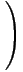

| Some Linear Algebra |
|
4 |
If f1(t), f2(t), ..., fk(t) are generic, then row operations convert them to
| f1(t) | = | td | -a11td-k | -a1,d-kt | -a1,d+1-k | |||||
| f2(t) | = | td-1 | -a21td-k | -a2,d-kt | -a2,d+1-k | |||||
| fk(t) | = | td+1-k | -ak1td-k | -ak,d-kt | -ak,d+1-k |
Set g(t) :=
(1, t, t 2, ..., t d )
and let G(t) be the k by d+1 matrix
with rows g(t), g'(t), ...,
g(k-1)(t).
Then the Wronskian of the polynomials
f1(t),
f2(t), ...,
fk(t)
is the determinant of
 |
|
 |
The lower portion of the matrix (At : I ) are linear forms defining the linear span of the polynomials f1(t), f2(t), ..., fk(t).